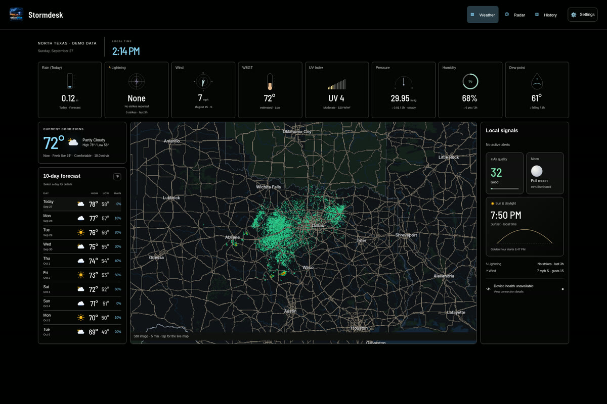

◈ StormDeskOPEN STORMDESK ↗
YOUR WEATHER.
ALL TOGETHER.
ALL TOGETHER.
01 / YOUR WEATHERA little closer
to home.
to home.
Your station.
Your data.
Your data.
WEATHER / RADAR / HISTORY

STORMDESK / COLOR STUDIES
Five light. Five dark. The same StormDesk, in a different light.
Open a preview and use the corner switcher to compare across the site.
From your taste vault and Hookecho color studies. Website colors change; actual app captures keep their original colors.

02 / light
Soft ivory and forest green. Calm, grounded, outdoors.
03 / light
Warm parchment with burnt copper. An editorial field manual.
04 / light
Pale mineral green with deep teal. Clear and refreshing.
05 / light
Lavender paper and rich violet. A softer technical character.
06 / dark
Deep navy with icy blue. A focused overnight workstation.
07 / dark · selected theme
Charcoal and amber. Instrument-panel contrast.
08 / dark
Deep evergreen and acid lime. Sharp, energetic, field-ready.
09 / dark
Black cherry and dusty rose. Atmospheric without the glow.
10 / dark
Near-black and chalk white. Pure hierarchy, minimal color.
Charcoal and amber.